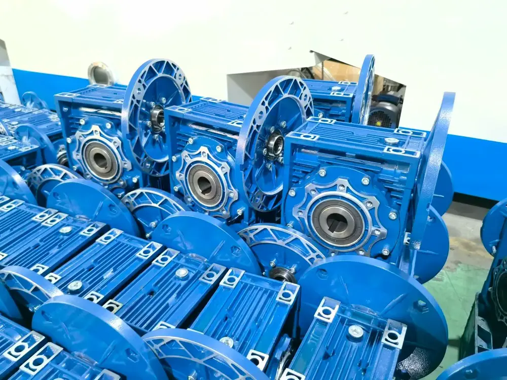

If your worm gearbox is overheating, check the following common causes before assuming the gearbox is damaged.
1. Overloading the Worm Gearbox
If required output torque is higher than the rated torque of the worm gear reducer, the gearbox operates under excessive stress, creating additional friction and heat.
Solution: Check actual load and required output torque. If necessary, select a larger NMRV gearbox with higher torque capacity.
2. Incorrect or Insufficient Lubrication
Lubricating oil reduces friction between the worm, worm wheel, bearings and other internal components. Too little oil can cause excessive friction; too much oil can increase resistance and operating temperature. The wrong lubricant may have the same effect.
Solution: Check the oil level and use the lubricant recommended for your gearbox. High-quality synthetic gear oil is commonly used for many NMRV worm gearboxes.
3. Breather Plug Is Not Installed Correctly
Many gearboxes use a sealed plug during transportation. For gearboxes designed for vented operation, replace it with the correct breather plug before startup. Without ventilation, pressure can build as oil temperature rises.
Solution: Check whether the breather plug is installed according to the mounting position. See our breather plug guide.
4. Gearbox Size Is Too Small
Selecting a gearbox only by motor power is not enough. Required torque, service factor, operating hours, starting frequency and application conditions also matter. A gearbox that is too small may continuously operate near or above rated capacity and overheat.
Solution: Recalculate required torque and service factor and select an appropriate size.
5. High Ambient Temperature or Poor Ventilation
A closed enclosure, nearby heat source or high-temperature workshop can prevent heat from dissipating effectively.
Solution: Provide sufficient airflow around the gearbox and avoid other heat-producing equipment.
6. Incorrect Installation or Alignment
Misalignment between motor, gearbox and driven equipment can create extra radial or axial loads, increasing bearing friction and temperature.
Solution: Check mounting surface, shaft alignment, coupling and driven equipment. Install the gearbox securely without unnecessary external stress.
Is It Normal for a Worm Gearbox to Get Hot?
Yes. A worm gearbox normally generates more heat than some gearbox types due to significant sliding contact. A warm housing does not automatically mean there is a problem. Stop and inspect if temperature suddenly rises, continues increasing, or occurs with oil leakage, abnormal noise, vibration or a burning smell.
Conclusion
When an NMRV worm gearbox overheats, first check load, lubrication, breather plug, gearbox selection, ventilation and installation. Correct selection and installation improve reliability and service life.